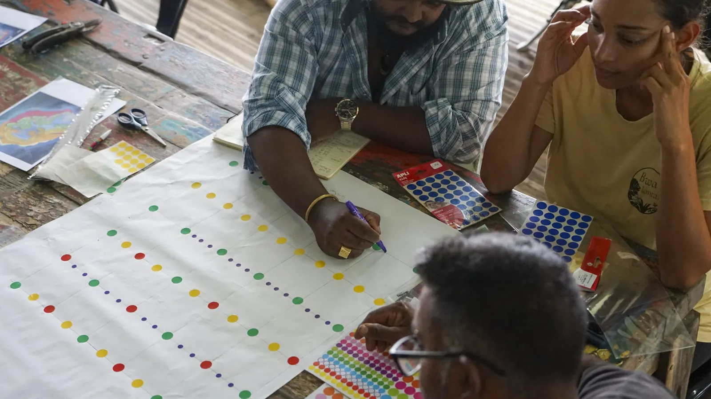
Suivi et accompagnement
- Visites techniques régulières sur le terrain
- Accompagnement des chantiers de plantation et de taille
- Ajustement du système selon les résultats observés
- Montage de projets et recherche de financements
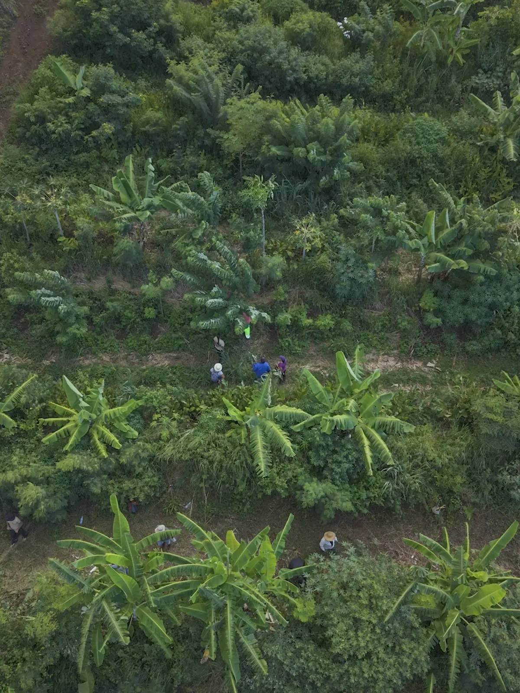
Bwa Lontan conçoit des projets agricoles, du site à la parcelle : stratégie économique, stratégie végétale, formation et accompagnement jusqu'aux récoltes.
Pour les collectivités, les porteurs de projets et les particuliers.
Projets alimentaires territoriaux, transition agroécologique, formation des équipes et suivi des indicateurs.
Expertise en milieu tropical insulaire et transfert de compétences dans l'océan Indien.
Installation, diversification ou jardin-forêt, adaptés à votre terrain et à votre budget.
Chaque projet est différent : le sol, la pente, l'altitude, l'eau, vos objectifs et votre modèle économique décident du système. Nous intervenons à chaque étape, ou seulement là où vous en avez besoin.
Visite du site, lecture du sol, de l'eau et du relief. Vos objectifs, vos moyens et vos contraintes économiques.
Des ateliers avec vous pour construire le projet : scénarios, choix des espèces, modèle économique.
Plans, phasage, chiffrage et itinéraire de conduite, prêts pour décider et rechercher des financements.
Préparation du sol, gestion de l'eau et chantier de plantation accompagné sur le terrain.
Calendrier de tailles, gestion de la biomasse et ajustements du système au fil des saisons.
Premières récoltes, suivi des indicateurs et évolution du système dans le temps.
En tant que bureau d'études, nous intervenons à l'échelle de la ferme, de la parcelle, ou des deux, selon votre projet et vos besoins réels. Chaque mission débouche sur des livrables clairs.
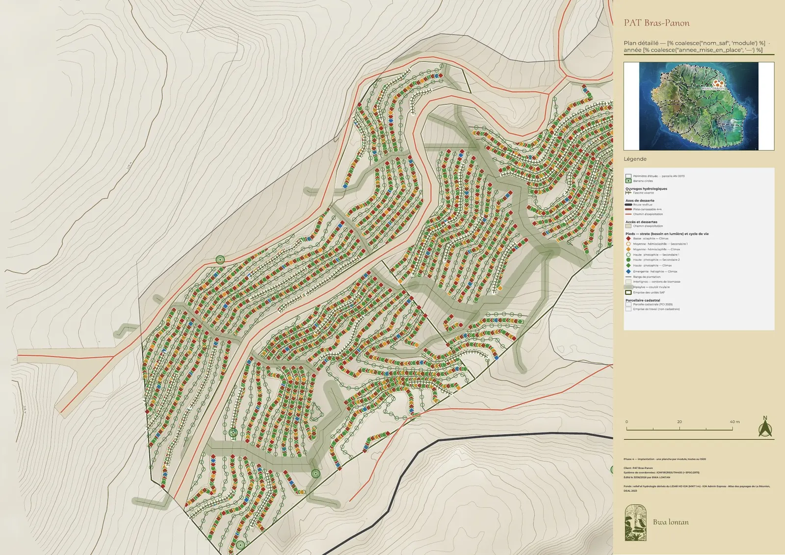

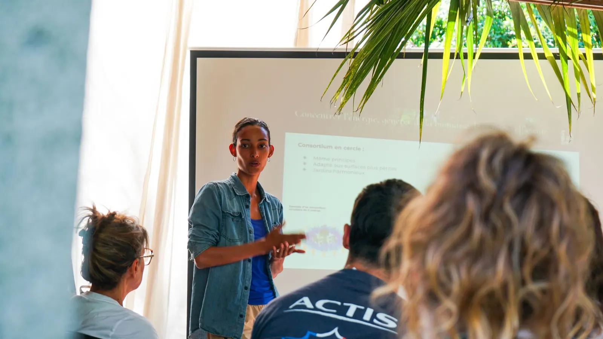
Nous concevons nos systèmes selon les principes de l'agriculture syntropique, développée par Ernst Götsch. Elle s'appuie sur les mécanismes de la succession naturelle : les espèces cultivées sont associées en consortiums denses, conçus pour produire des aliments tout en accumulant de la fertilité au fil des années.
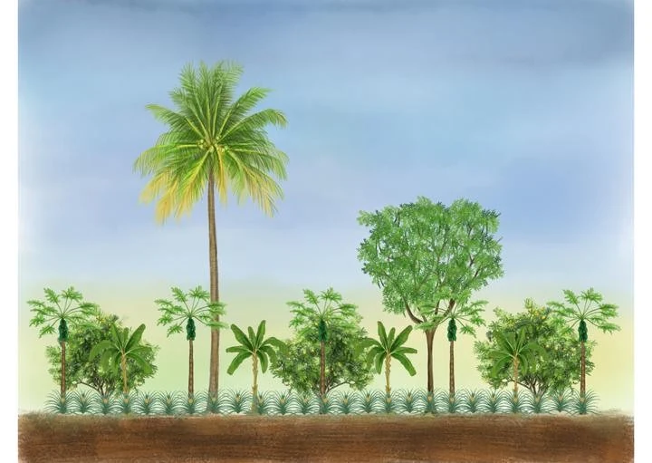
Chaque espèce a un cycle de vie : certaines dominent les premiers mois, d'autres les premières années, d'autres plusieurs décennies. Le système est planté d'un coup et produit à chaque étape.
Le sol reste couvert par la biomasse issue des tailles. La matière organique et la vie du sol se développent au fil des années : la fertilité se construit dans le système, pour réduire les apports extérieurs.
Des consortiums denses et diversifiés, organisés en strates selon le besoin en lumière de chaque espèce. Davantage de productions sur une même surface, des récoltes étalées dans le temps et des risques mieux répartis.
Un outil de pilotage : elle règle la lumière, stimule la croissance et produit la biomasse qui nourrit le système.
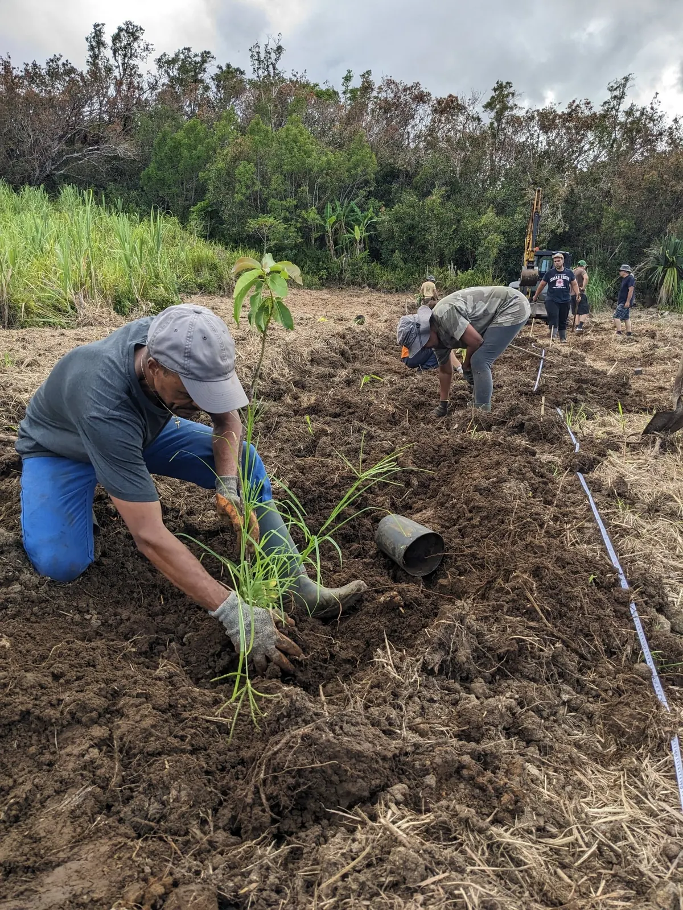
Formation à l'agriculture syntropique pour les agriculteurs du groupement.
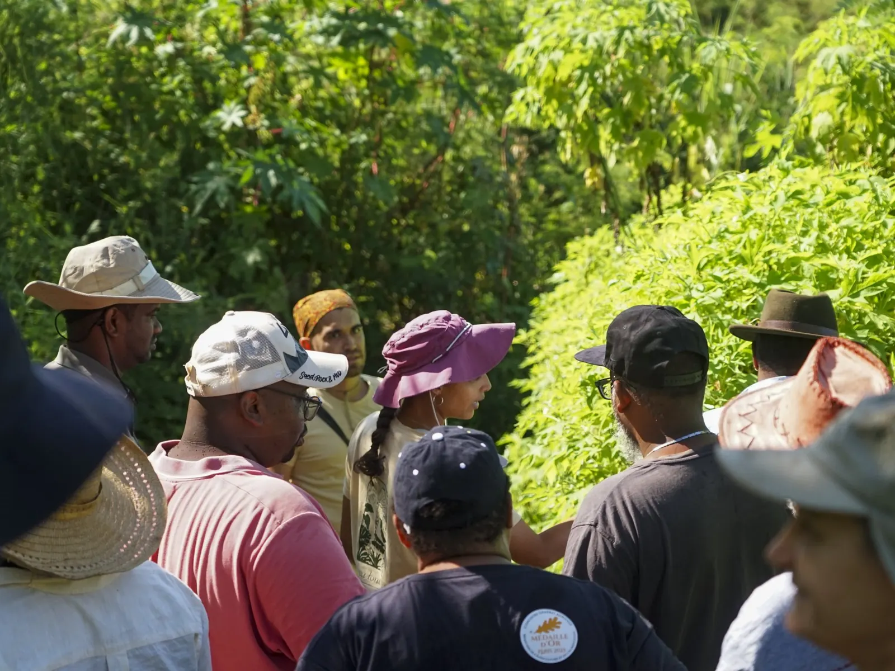
Avec le projet alimentaire territorial et la commune : formation et mise en place de deux parcelles pilotes en agroforesterie.
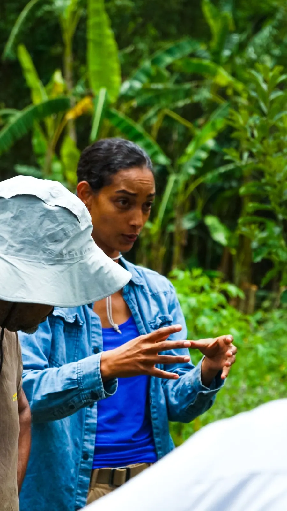
Concevoir et mettre en place une parcelle de manguiers en agriculture syntropique pour réduire l'utilisation d'intrants, avec un lycée agricole. Un groupe technique et les étudiants assurent le suivi des indicateurs.
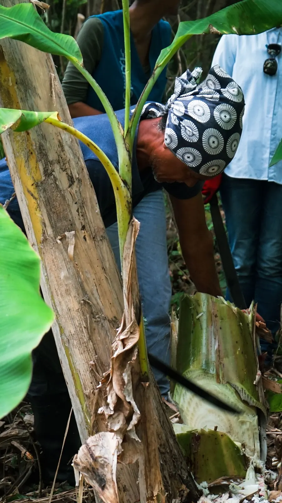
Conception et accompagnement d'un projet agricole en système agroforestier, de 2024 à aujourd'hui.
Appels à projets, programmes de territoire : nous constituons une équipe avec les experts nécessaires, par exemple en hydrologie régénérative ou en science des sols. Bwa Lontan y porte la stratégie végétale et la stratégie économique.
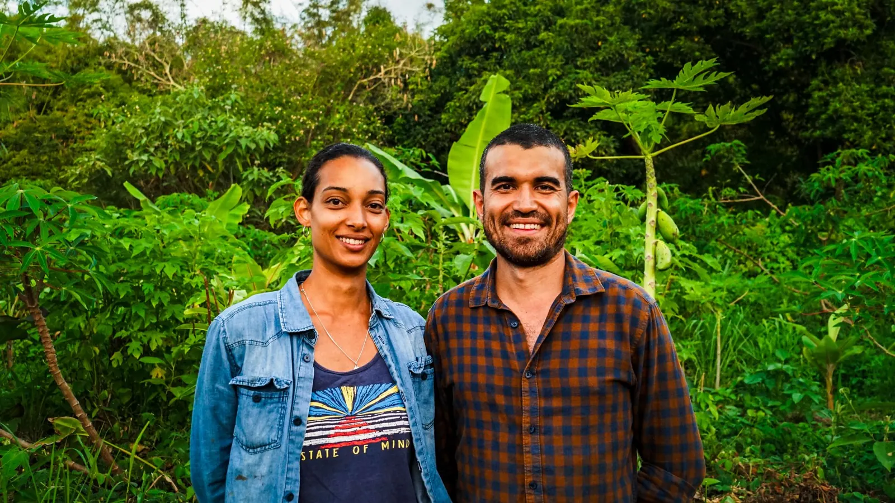
Nous sommes une équipe d'agronomes et de concepteurs passionnés par l'agroforesterie, avec des expériences de terrain en pays tropicaux. Basés à La Réunion, nous connaissons les réalités du milieu tropical insulaire : cyclones, fortes pentes, sols volcaniques, contrastes de pluie d'une côte à l'autre.
Nous réunissons ce qu'un projet agricole demande : l'analyse agronomique et économique, la conception de la ferme et des parcelles, et la transmission sur le terrain. Nous suivons les projets de l'étude jusqu'aux premières récoltes.
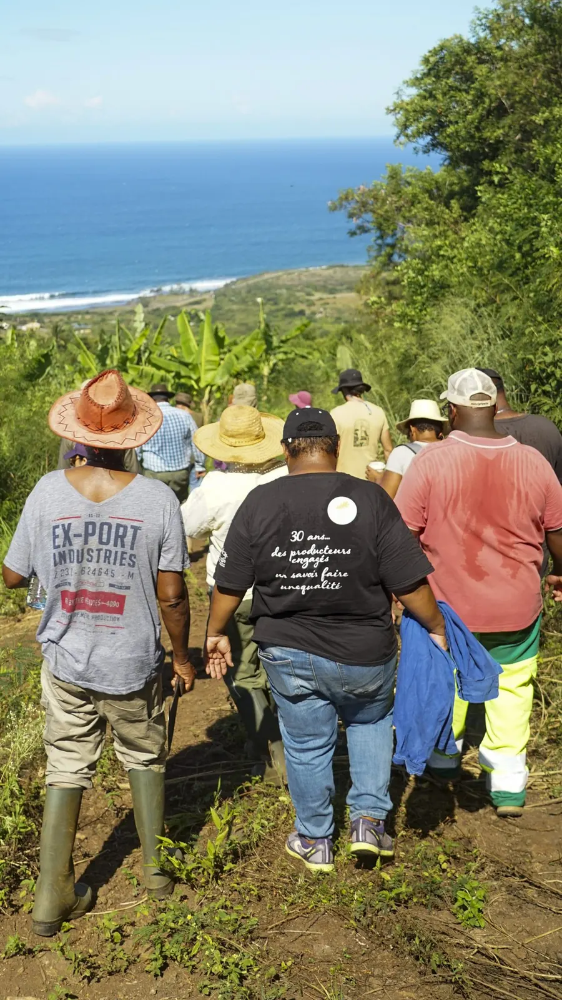
Conception, formation ou accompagnement : décrivez-nous votre terrain et vos objectifs, nous revenons vers vous sous quelques jours.